PROYECTO FINAL DEL CICLO ASIX (Proyecto SIGEI-GLPI)
1 - Introducción del proyecto
1.1 - Descripción del proyecto
- El presente proyecto tiene por objeto crear una aplicación web de Código abierto que permita llevar el control de los equipos informáticos del Instituto JaumeII El Just y sobre todo mantener un historial ordenado de todo lo que ocurre con el soporte técnico.
1.2 - Objetivos del proyecto
- Tener un inventario completo de los dispositivos tecnológicos del centro.
- Gestionar incidencias o problemas técnicos de manera ordenada.
- Crear códigos QR para gestionar puntualmente vía móvil esas incidencias o consultas.
- Asignar tareas vía email al grupo de Mantenimiento y hacer seguimiento de su resolución.
- Obtener reportes útiles sobre el estado del sistema y los equipos.
- Mejorar la atención al profesorado y alumnado interno del centro.
2 - Análisis de opciones y requisitos vistos para considerar
2.1 - Snipe-IT

Snipe-IT es una aplicación web de código abierto diseñada para la gestión de activos de TI (Information Technology, hardware, software,...). Es una solución popular entre empresas y organizaciones que buscan una herramienta flexible y personalizable para rastrear y administrar sus activos de hardware y software.
2.1.1 - Enfoque
- Principalmente una herramienta de gestión de activos de TI (Information Technology).
- Sobresale en el seguimiento de activos de hardware y software, licencias e información relacionada.
2.1.2 - Fortalezas
- Interfaz fácil de usar.
- Sólidas capacidades de seguimiento de activos.
- Ideal para organizaciones que necesitan un inventario detallado de hardware y software.
- Muy bueno en la gestión de licencias, control de equipos y recursos de la organización
- Muy bueno en el rastreo de los activos con códigos de barras y códigos QR.
2.1.3 - Limitaciones
- Menos robusto en áreas como la gestión de solicitudes de soporte técnico de los usuarios, en la creación y seguimiento de incidencias, asignación a grupos de mantenimiento, gestión de prioridades, etc.., en comparación con GLPI.
2.2 - GLPI ( Gestionnaire Libre de Parc Informatique)
Un software gratuito y open-source para gestionar activos de TI (Information Tchnology, hardware, software,...). GLPI permite administrar inventarios de equipos, seguimiento de problemas y gestión de tareas relacionadas con el mantenimiento y soporte de sistemas informáticos; o sea atender, ayudar, solucionar y rastrear problemas e incidencias (tickets).
2.2.1 - Enfoque
- Una suite integral de gestión de servicios de TI (Information Technology).
- Incluye gestión de activos e incidencias y asignación de prioridades de ayuda.
2.2.2 - Fortalezas
- GLPI es un software libre para la gestión de TI (Information Technology), destacando por su personalización, automatización de peticiones e incidencias y ampliamente utilizado por empresas para optimizar la gestión de su infraestructura tecnológica.
- Centraliza activos, inventario y soporte en una sola plataforma.
2.2.3- Limitaciones
- Puede tener una curva de aprendizaje más pronunciada.
- La interfaz puede considerarse menos moderna que la de Snipe-IT
3 - Decisión: GLPI
3.1 - Motivos
Es una elección **más sólida que Snipe-IT, ya que ofrece un conjunto más completo de herramientas, para gestionar:**
- Incidencias técnicas (equipos, software, etc.).
- Problemas recurrentes y cambios en la infraestructura.
- Escalabilidad: Crece junto con las necesidades del centro.
- Control detallado: Inventario de equipos y licencias.
- Comunidad activa: Actualizaciones constantes y soporte.
- Trayectoria global: Ampliamente usado en Europa y Latinoamérica.
- Multilingüe y flexible: Se adapta a entornos educativos diversos.
4 - Escenario con AWS

4.1 - Diagrama de arquitectura

5 - Escenario definitivo con Proxmox

5.1 Diagrama de arquitectura
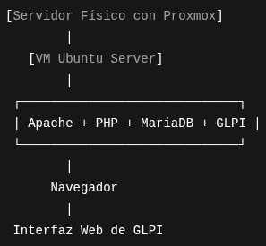
6 - Instalación y configuración de las herramientas a utilizar
6.1 - AWS con Ubuntu Server 24.04
La instancia de AWS será la MV en la nube que nos alojará las siguientes herramientas que necesitaremos en nuestro proyecto, manejando toda la lógica, el almacenamiento y la generación de contenido.
Ubuntu-server será el sistema operativo que nos proporcionará la base para ejecutar los servicios.


Creación de una instancia EC2 en AWS
-
Paso 1. Iniciamos el laboratorio.
-
Desde el curso de AWS Academy iniciamos el laboratorio pulsando en Start Lab y esperamos a que el icono que aparece junto al texto de AWS se ponga de color verde.

- Paso 2.Accedemos a la consola de Administración de AWS.
- Desde la consola seleccionamos el servicio de EC2.

- Paso 3. Buscamos el botón "Launch Instance" para crear una instancia EC2.

- Paso 4. Le asignamos un nombre a la instancia EC2 que vamos a crear.
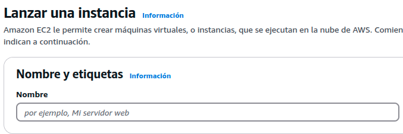
- Paso 5. Seleccionamos la AMI y la arquitectura de la instancia EC2.
- En este paso tenemos que seleccionar la AMI (Amazon Machine Image) y la arquitectura. Para mi proyecto voy a seleccionar la imagen Ubuntu Server 24.04 LTS (HVM), SSD Volume Type, y la arquitectura 64 bits (x86).

- Paso 6. Seleccionamos el tipo de instancia EC2.
- Seleccionamos que vamos a crear una instancia de tipo t2.micro. que cuenta con 1 vCPU y 1 GiB de RAM.

-
Paso 7. Seleccionamos la clave pública SSH que le vamos a inyectar a la instancia EC2.
-
En este ejemplo vamos a utilizar la clave pública vockey que está asociada a nuestra cuenta de usuario en la plataforma AWS Learner Lab. La clave privada la descargaremos más adelante desde la plataforma, para poder conectarnos por SSH con la instancia EC2.

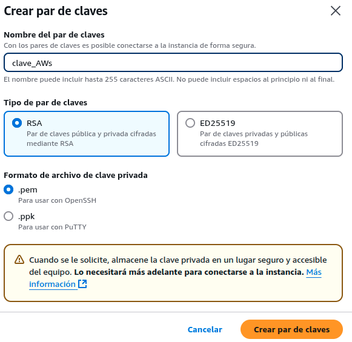
- Paso 8. Configuramos los grupos de seguridad.
- En este proyecto vamos a crear un nuevo grupo de seguridad y vamos a utilizar tres reglas para permitir tráfico SSH, HTTP y HTTPS.
- SSH. Protocolo: TCP. Puerto: 22. Origen: 0.0.0.0/0
- HTTP. Protocolo: TCP. Puerto: 80. Origen: 0.0.0.0/0
- HTTPS. Protocolo: TCP. Puerto: 443. Origen: 0.0.0.0/0

- Paso 9. Añadimos el almacenamiento que utilizará la instancia.*
- En este paso configuramos cuál será el almacenamiento que utilizará la instancia EC2 que estamos creando.
- Para nuestro ejemplo en el proyecto no vamos a modificar ninguno de los parámetros que aparecen por defecto y utilizaremos un disco SSD de 8 GB.

- Paso 10. Revisamos la configuración seleccionada.
- Para crear la instancia pinchamos sobre el botón Lanuch Instance.

- Paso 11. Estado de la instancia.
- En este paso nos aparece un mensaje indicando que la instancia se está creando. Pincharemos sobre el identificador de la instancia que aparece en el cuadro de color verde.
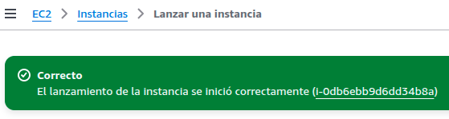
- Paso 12. Consultaremos el estado de la instancia desde la consola de administración.
- Cuando pasen unos segundos le aparecerá en la consola la instancia que acaba de crear.
- Cuando la instancia muestre que está en estado Running es que está preparada para conectarnos a ella.

Nos conectamos a la instancia por SSH para ejecutar los comandos de instalación de las herramientas del proyecto
- Paso 1. Seleccionamos la instancia y pinchamos sobre "Conectar".

- Paso 2. Vamos a obtener el comando para conectarnos desde un cliente SSH en Linux.
- En este paso nos aparece cómo podemos conectarnos a la instancia que acabamos de crear.
- Seleccionaremos la opción SSH client, y veremos los pasos que tenemos que realizar para conectarnos a la instancia.
- El comando que tenemos que utilizar para conectarnos a la instancia lo podemos copiar en este paso. En el comando aparece el nombre del archivo .pem de la clave privada (que hemos creado), el nombre del usuario y el nombre DNS público de la instancia.

-
En nuestro caso al crear par de claves ya las hemos ubicado en el directorio Música, pero se pueden descargar pinchando sobe el texto AWS Details y le aparecerá en la parte derecha la posibilidad de descargar la clave como un archivo**.PEM o .PPK.**
-
En Linux utilizaremos la clave .PEM, cuando descarguemos la clave se descargará como nombre.pem o nombre.ppk.


Paso 3. Nos conectamos por SSH desde Linux.
- Cambiamos los permisos del archivo para que solo el propietario tenga permisos de lectura.
sudo chmod 400 clave_aws.pem
- Ejecutamos el comando que copiamos en el paso 2 para conectarnos por SSH a la instancia EC2 desde un terminal de Linux.
- El comando será parecido al este, pero el nombre DNS de la instancia será diferente.
sudo ssh -i "clave_AWS.pem" ubuntu@ec2-34-239-105-173.compute-1.amazonaws.com
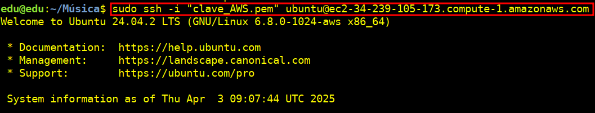
6.2 - (Instalación definitiva ) Proxmox con Ubuntu Server 24.04
6.2.1 - Instalación de Proxmox
- Paso 1. Descargar la ISO de Proxmox VE.
- Desde la web oficial: https://www.proxmox.com/en/downloads
- Paso 2. Crear un USB booteable.
- Usaremos herramientas como Rufus (Windows) o balenaEtcher (Linux/macOS).
- Paso 3. Arrancar desde el USB.
- Encendemos el servidor o PC y entramos en la BIOS/UEFI para arrancar desde el USB.
- Paso 4. Iniciamos la instalación.
-
Selecciona "Install Proxmox VE" en el menú que aparece.

-
Paso 5. Aceptar licencia y disco de instalación.

- Paso 6. Configurar región y teclado .
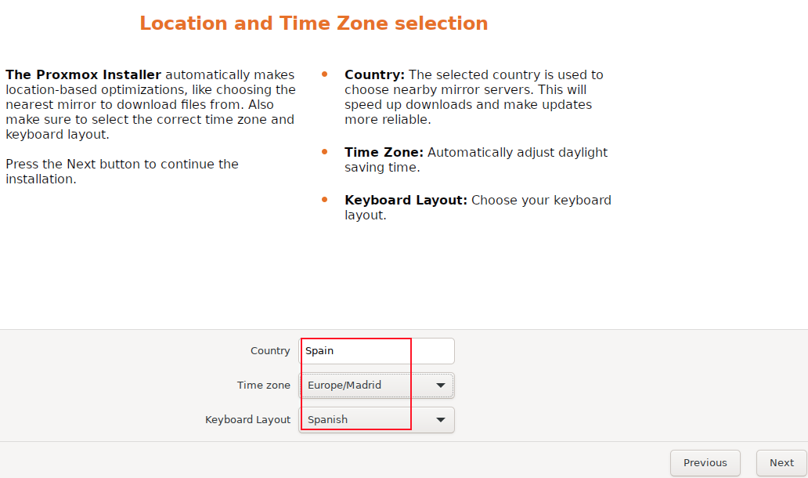
- Paso 7. Crear contraseña de root y correo electrónico.

- Paso 8. Configurar red.
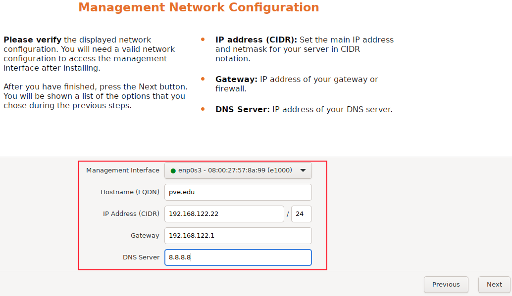
- Paso 9. Finalizar instalación y reiniciar.
-
Cuando terminemos, retiramos el USB y reiniciamos.
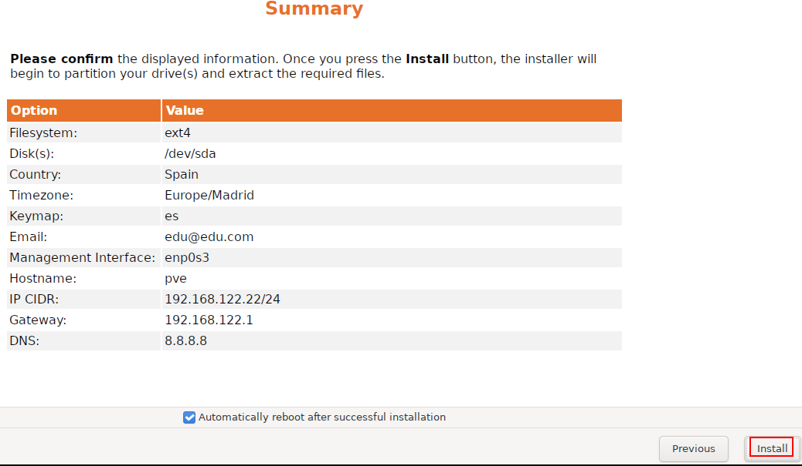

-
Paso 10. Accedemos a la interfaz web (después del reinicio.
-
Abre un navegador y entramos en:
https://[IP-del-servidor]:8006.
6.2.2 - Creación de la MV Ubuntu Server en Proxmox
- Paso 1. Cargar ISO a Proxmox VE una vez hemos accedido a la interfaz web.

- Paso 2. Esto abrirá la ventana emergente de carga. Seleccionaremos Imagen ISO. Desde el menú desplegable de contenido, seleccionaremos el archivo ISO que deseamos cargar. Haremos clic en el botón Upload para cargar el archivo ISO.


- Paso 3. Crearemos la MV una vez cargado el archivo ISO.

- Paso 4. En la pestaña General asignaremos un nombre a la MV.

- Paso 5. En la pestaña OS elegimos la imagen ISO que hemos subido.
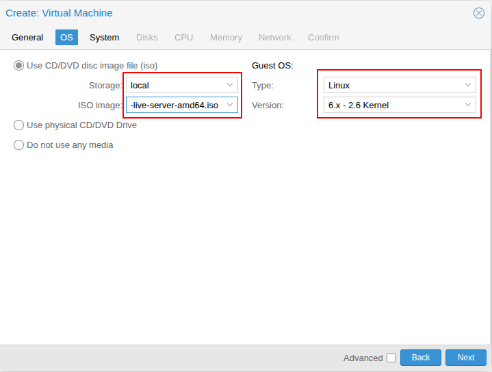
- Paso 6. En la pestaña System dejaremos la configuración predeterminada.

- Paso 7. En la pestaña Disk seleccionaremos el disco de almacenamiento y el tamaño del disco de la MV.
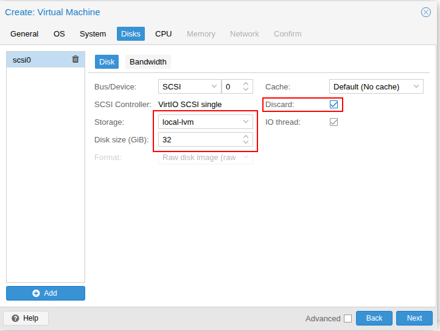
- Paso 8. En la pestaña CPU seleccionaremos el número de núcleos de CPU que deseamos asignar a la MV.

- Paso 9. En la pestaña Memory asignaremos la cantidad de RAM para la MV.
- Como estamos realizando pruebas en VirtualBox con 2 niveles de virtualización asignaremos más cores y RAM para que pueda funcionar.
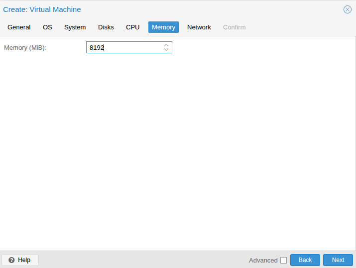
- Paso 10. En la pestaña Network dejaremos la configuración predeterminada.
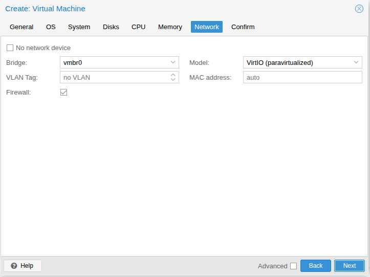
- Paso 11. En la pestaña Confirm revisaremos la configuración de la MV y finalizaremos.
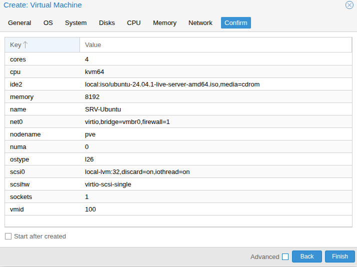
- Paso 12. Instalaremos el SO en la MV.

- Paso 13. Se abrirá una consola virtual que usaremos para instalar el SO que queramos, siguiendo las instrucciones del instalador.
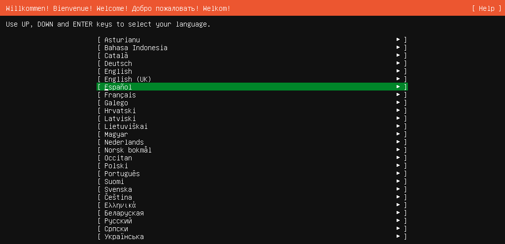
6.3 - Creación de la pila LAMP (Linux, Apache, MariaDB y PHP)
6.3.1 - Instalación de Apache

Será el servidor web que nos gestionará las solicitudes HTTP y nos proporcionará las páginas web.
-
Paso 1. Instalamos:
sudo apt update sudo apt install apache2 -y -
Paso 2. Realizamos un backup de nuestro 000-defaults.conf
sudo mv /etc/apache2/sites-available/000-default.conf /etc/apache2/sites-available/000-default.conf.bkp -
Paso 3. Creamos un archivo de configuración (glpi.conf) para el sitio de GLPI en Apache como nos indica la "Documentación Oficial de GLPI".
https://glpi-install.readthedocs.io/en/latest/prerequisites.html#web-server
GLPI recomienda no colocarlo en el directorio por default de Apache "/var/www/html", sugiere colocarlo por fuera por lo cual lo colocaremos en "/var/www".
sudo nano /etc/apache2/sites-available/glpi.conf
<VirtualHost *:80>
ServerName edu.com
DocumentRoot /var/www/glpi/public
<Directory /var/www/glpi/public>
Options -Indexes +FollowSymLinks
AllowOverride All
Require all granted
RewriteEngine On
# Redirect all requests to GLPI router, unless file exists.
RewriteCond %{REQUEST_FILENAME} !-f
RewriteRule ^(.*)$ index.php [QSA,L]
</Directory>
ErrorLog ${APACHE_LOG_DIR}/glpi-error.log
CustomLog ${APACHE_LOG_DIR}/glpi-access.log combined
</VirtualHost>
-
Paso 4. Habilitamos el archivo .conf que hemos creado y habilitamos el modulo rewrite.
sudo a2ensite glpi.conf sudo a2enmod rewrite -
Paso 5. Recargamos, activamos y reiniciamos apache2.service
sudo systemctl reload apache2.service sudo systemctl enable apache2.service sudo systemctl restart apache2.service
6.3.2 - Instalación de PHP

Será el lenguaje de programación que ejecutará el código de GLPI y nos generará las páginas dinámicas.
-
Paso 1. Instalaremos los repositorios de php y actualizaremos.
sudo apt install software-properties-common apt-transport-https -y sudo add-apt-repository ppa:ondrej/php -y sudo apt update -
Paso 2. Instalamos la versión de php que nos indica la "Documentación Oficial de GLPI", los paquetes necesarios y reiniciamos.
https://glpi-install.readthedocs.io/en/latest/prerequisites.html#php

sudo apt install php8.3 php8.3-cli php8.3-common libapache2-mod-php8.3 -y sudo apt install libapache2-mod-fcgid php8.3-fpm -y sudo systemctl restart apache2.service -
Paso 3. Activamos variable "session.cookie_httponly" a "on" en "/etc/php/8.3/fpm/php.ini" y reiniciamos.
sudo nano /etc/php/8.3/fpm/php.iniBuscamos con el editor la variable session.cookie = y la activamos con on.
Es una medida de seguridad importante para proteger las sesiones de usuario en aplicaciones web PHP.
Ayuda a prevenir el robo de cookies y la suplantación de identidad. Se recomienda habilitar esta directiva en todos los entornos de producción.
sudo systemctl restart php8.3-fpm -
Paso 4. Habilitamos funciones instaladas de php, habilitamos la función "fpm" y recargamos-reiniciamos
sudo a2enmod proxy_fcgi setenvif sudo a2enconf php8.3 -fpm sudo systemctl reload apache2.service sudo systemctl restart apache2.service
Instalamos la extensiones y dependencias que vamos a necesitar para la posterior instalación de "GLPI".
sudo apt install -y php8.3-{curl,gd,imagick,intl,apcu memcache,imap,mysqli,ldap,tidy,xmlrpc,pspell,gettext,mbstring,fpm,iconv,xml,xsl,bz2,Phar,zip,exif}
6.3.3 - Instalación de MariaDB

Será la BBDD que nos almacenará los datos de GLPI.
-
Paso 1.Instalamos mariadb-server y securizamos.
Seguimos los pasos, colocamos una nueva contraseña para el usuario root de la BBDD, eliminamos las BBDD de prueba y eliminamos el acceso a usuarios anónimos (Enter--n--y--Enter-pass--Re-enter-pass--y--y--y--y).
sudo apt install mariadb-server -y sudo mysql_secure_installation -
Paso 2. Creamos una BBDD en nuestro caso "glpi", un usuario para GLPI en MariaDB, damos privilegios y además activaremos la zona horaria en mysql.
Podemos cambiar los datos que deseemos, nombre de usuario y BBDD, y colocaremos una contraseña apropiada.
sudo mysql -u root -p CREATE DATABASE glpi; CREATE USER '<nomuser>'@'%' IDENTIFIED BY <'passuser'>; GRANT ALL PRIVILEGES ON glpi.* TO '<nomuser>'@'%'; GRANT SELECT ON mysql.time_zone_name TO '<nomuser>'@'%'; flush privileges; exit; -
Paso 3. Cargamos las zonas horarias del sistema (introducimos la contraseña de root).
sudo mysql_tzinfo_to_sql /usr/share/zoneinfo | sudo mysql -u root -p mysql
6.4 - Descarga e instalación de GLPI
Será la aplicación que se instalará en el servidor y que nos gestionará los activos de TI con todos los servicios que nos ofrece.
-
Paso 1. Procederemos desde su sitio oficial, la última versión para la fecha es la "10.0.18".
https://glpi-project.org/es/descargar-software/
wget https://github.com/glpi-project/glpi/releases/download/10.0.18/glpi-10.0.18.tgz -
Paso 2. Descomprimimos el archivo y lo movemos (-C) al directorio "/var/www" Posteriormente eliminaremos el fichero .tgz, que no lo necesitaremos y el index.html para no tener problemas.
sudo tar -zxvf glpi-10.0.18.tgz -C /var/www/ sudo rm -rf glpi-10.0.18.tgz sudo rm -rf /var/www/html/index.html -
Paso 3. Le damos al usuario de apache la propiedad de la carpeta y permisos.
sudo chown -R www-data:www-data /var/www/glpi sudo chmod -R 755 /var/www/glpi -
Paso 4 (opcional). Si queremos cambiar los logotipos de GLPI, tendremos que tener en el $HOME de nuestro servidor el logo-master que cambiará los de la aplicación.
Una vez consultada la página oficial de las recomendaciones para determinar el tamaño (pixel) de los logos de cada sitio, procederemos a crearlos.
https://glpi-plugins.readthedocs.io/en/latest/branding/index.html
Tendremos que tener instalado en el sistema imagemagick para poder crear con el comando converter los ficheros de imagen de los logos con los tamaños que se nos indica.
sudo apt install imagemagick -yHaremos un backup de los logos originales de la aplicación.
sudo mv /var/www/glpi/pics/favicon.ico /var/www/glpi/pics/favicon.ico.bkp sudo mv /var/www/glpi/pics/logos/logo-GLPI-100-white.png /var/www/glpi/pics/logos/logo-GLPI-100-white.png.bkp sudo mv /var/www/glpi/pics/logos/logo-GLPI-250-black.png /var/www/glpi/pics/logos/logo-GLPI-250-black.png.bkpCrearemos los ficheros de imagen de los logos con los tamaños requeridos (pixeles) que vamos a necesitar.
sudo convert $HOME/<logo-master> -resize 32x32\! favicon.ico sudo convert $HOME/<logo-master> -resize 100x55\! logo-GLPI-100-white.png sudo convert $HOME/<logo-master> -resize 220x130\! logo-GLPI-250-black.pngCambiamos los permisos de los ficheros creados a 755.
sudo chmod 755 favicon.ico sudo chmod 755 logo-GLPI-100-white.png sudo chmod 755 logo-GLPI-250-black.pngCopiamos los ficheros de imagen creados de los logos a sus respectivas rutas.
sudo cp favicon.ico /var/www/glpi/pics/ sudo cp logo-GLPI-100-white.png /var/www/glpi/pics/logos/ sudo cp logo-GLPI-250-black.png /var/www/glpi/pics/logos/Cambiamos el propietario y el grupo de todos los ficheros a www-data.
sudo chown www-data:www-data /var/www/glpi/pics/favicon.ico sudo chown www-data:www-data /var/www/glpi/pics/favicon.ico.bkp sudo chown www-data:www-data /var/www/glpi/pics/logos/logo-GLPI-100-white.png sudo chown www-data:www-data /var/www/glpi/pics/logos/logo-GLPI-100-white.png.bkp sudo chown www-data:www-data /var/www/glpi/pics/logos/logo-GLPI-250-black.png sudo chown www-data:www-data /var/www/glpi/pics/logos/logo-GLPI-250-black.png.bkp
Hay que tener en cuenta que para que se aplique en su momento el cambio de los "logos" tendremos que "ELIMINAR-BORRAR LOS DATOS DEL NAVEGADOR".
En este momento ya tenemos instalados todos los componentes para ejecutar GLPI abriendo un navegador contra nuestro GLPI, <http://IP de nuestro servidor.
6.5 - Asistente de configuración de GLPI
-
Paso 1. Si todo ha ido bien tendremos el asistente de configuración de GLPI, después de abrir ya un navegador contra nuestro GLPI, algo como http://DIRECCION_IP del servidor, lo primero, escogeremos el idioma a utilizar & OK.
-
Paso 2. Leemos y aceptamos los términos de la licencia de GLPI & Continuar.


-
Paso 3. Pulsamos en Instalar ya que estamos instalándolo por primera vez.

-
Paso 4. Verificamos que cumplimos todos los requisitos y están todos correctos.


-
Paso 5. Indicamos los datos del servidor de BBDD, indicamos localhost o 127.0.0.1 e indicamos el usuario y contraseña de acceso a la BBDD & Continuar.
-
Paso 6. Seleccionamos la BBDD que creamos anteriormente, llamada glpi & Continuar.


-
Paso 7. Si conectó e inicializó la BBDD, pulsamos en Continuar.
-
Paso 8. Podemos voluntariamente si queremos enviar las métricas de uso para que la comunidad de GLPI pueda mejorar el producto, en mi caso como son pruebas desactivaré & Continuar.


Nos indica que existen unas cuentas de usuario ya predefinidas con distintos roles, desactivaremos en un futuro las cuentas y cambiaremos su contraseña. Estas cuentas serían:
-
Administrador: glpi-glpi
-
Técnico: tech-tech
-
Cuenta sólo lectura: post-only-postonly
-
Cuenta normal: normal-normal
Inicialmente Acceso y Contraseña serán glpi
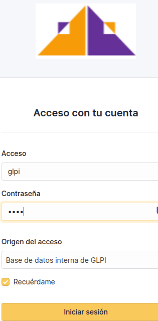 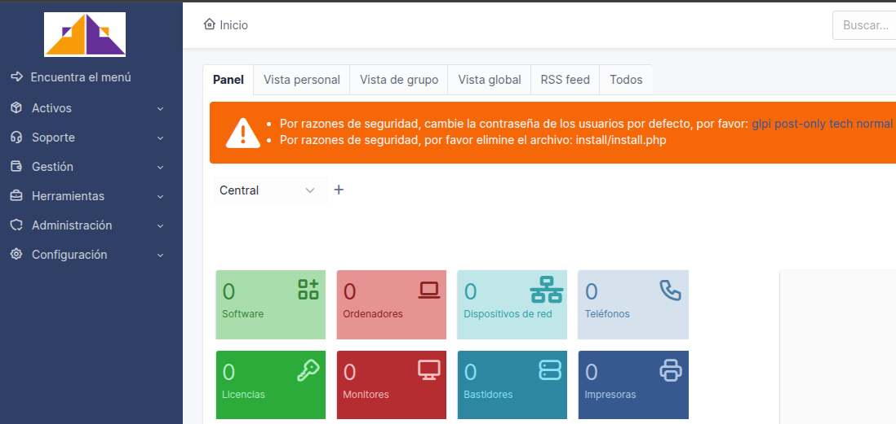
6.6 - Documentación funcional de GLPI
6.6.1 - Crear usuarios
Un usuario es una persona que va a usar GLPI. Puede ser:
-
Un técnico de soporte.
-
Un administrativo que genera tickets.
-
Un responsable que autoriza compras.
-
O simplemente alguien que reporta incidencias.
Opcional pero recomendable:
-
Darle un perfil (rol):
-
Por ejemplo: "Self-Service", "Técnico", "Administrador".
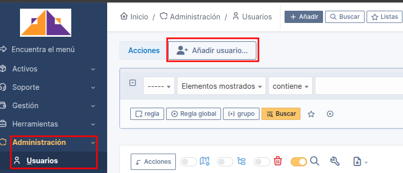
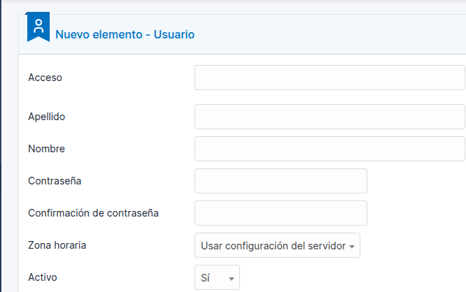
6.6.2 - Crear grupos
Crear grupos es una manera muy útil de organizar usuarios, asignar permisos más fácilmente, o estructurar equipos según proyectos, departamentos, etc.
- Accedemos a GLPI
-
Iniciamos sesión con un usuario que tenga permisos de administrador.
-
Vamos al menú de "Administración"
-
En el menú de la izquierda, hacemos clic en:
- Administración > Grupos
-
Hacemos clic en el botón "Añadir" (o el símbolo de +).
-
Se abrirá un formulario para crear el grupo.
-
Rellenaremos los datos del grupo.
-
Una vez rellenado todo, haremos clic en "Añadir" o "Guardar".
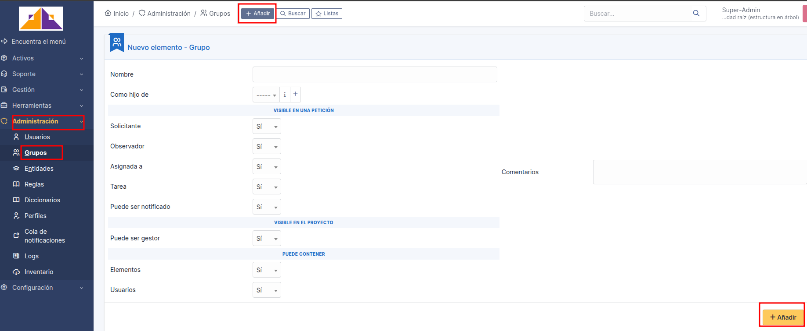
-
Asignamos usuarios al grupo.
-
Después de crearlo, dentro del grupo puedes ir a la pestaña Usuarios y pulsamos "Añadir".
-
Elegiremos los usuarios que queremos agregar a ese grupo.

6.6.3 - Gestión de perfiles
Un perfil define lo que el usuario puede hacer y ver. Es como un “rol” o “permiso”.
Algunos ejemplos que vienen por defecto:
- Self-Service: Solo reporta tickets y ve los suyos.
- Technician: Ve y gestiona tickets asignados.
- Supervisor: Ve todos los tickets de su grupo.
- Admin: Tiene acceso completo.
- Read-Only: Solo puede ver, no tocar nada.
Podemos crear perfiles personalizados, por ejemplo:
- Un perfil que solo puede ver inventario.
- Otro que solo puede aprobar compras, etc...
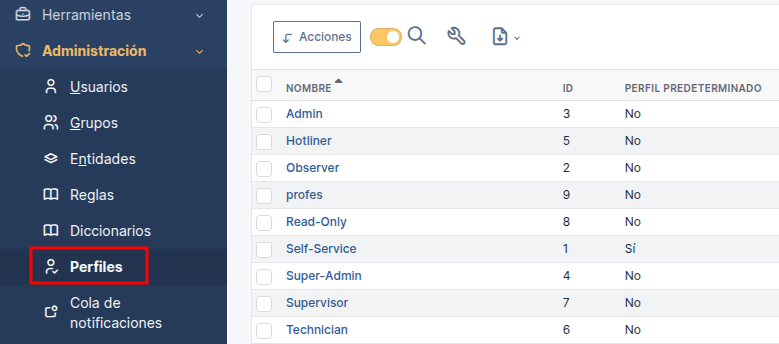
- Le asignamos dentro de cada apartado los permisos que deseamos para cada perfil o como hemos dicho anteriormente creamos un perfil con permisos personalizados.

6.6.4 - Gestión de GMail como nuestro servidor de correo
Google ha endurecido el proceso para enviar emails desde aplicaciones externas. Por este motivo recomendable tenemos que crear una \textcolor{red}{contraseña de aplicación} exclusiva para GLPI. No sustituye nuestra contraseña de GMail, se trata de una nueva que solamente sirve para enviar emails desde GLPI.
6.6.4.1 - Configurar la cuenta de GMail para que funcione con GLPI
-
Antes de nada, necesitamos una cuenta de GMail que será usada para enviar los correos:
-
Crearemos una cuenta GMail (si no tenemos una dedicada para GLPI, es recomendable que creemos una exclusiva).
-
Entrar a GMail y configuraremos lo siguiente:
-
Abrimos GMail y hacemos clic en nuestra cuenta, arriba derecha. Después clic en Gestionar tu cuenta de Google.

-
Ahora clic en la sección Seguridad en la parte izquierda de la página.
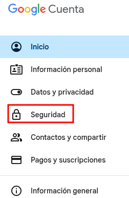
-
En la parte media de la Página, en la sección "Como inicias sesión en Google", Verificación en dos pasos (si no la tenemos ya), comprobaremos que lo tenemos activado para así poder crear la contraseña de aplicación para GLPI.
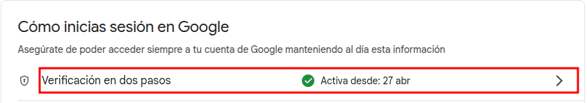
-
En la barra superior de búsqueda teclearemos Contraseñas de aplicación.

-
Introducimos el nombre de la aplicación que en nuestro caso será GLPI y pulsamos en Crear.
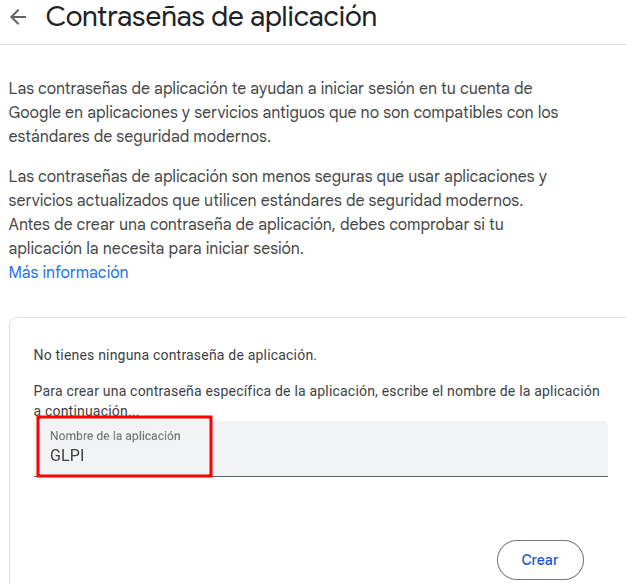
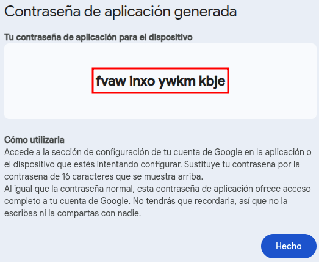
-
Ahora ya hemos creado una nueva contraseña de aplicación exclusiva para enviar emails desde GLPI. Solamente para eso, no sustituye a tu contraseña de GMail.
- Quitaremos los espacios generados entre los tramos de la contraseña y la guardaremos en un block de notas para posteriormente utilizarla en la configuración del email de GLPI.
6.6.4.2 - Configurar la salida de correo (SMTP) en GLPI
Ahora vamos a decirle a GLPI cómo usar esa cuenta de GMail para enviar correos.
- Entraremos en GLPI como "Super-Admin".
-
Iremos a Configuración > Notificaciones > Configuración de los seguimientos por correo.
-
Rellenamos los datos y guardamos:
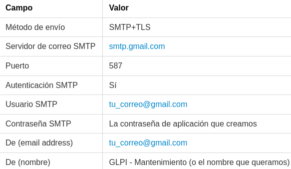

6.6.4.3 - Configurar las notificaciones para que avisen al grupo
Ahora vamos a configurar que cuando llegue una incidencia, se avise al grupo.
-
Iremos a Configuración > Notificaciones > Notificaciones.
-
Buscaremos la notificación llamada "Nueva petición" (o "New Ticket").
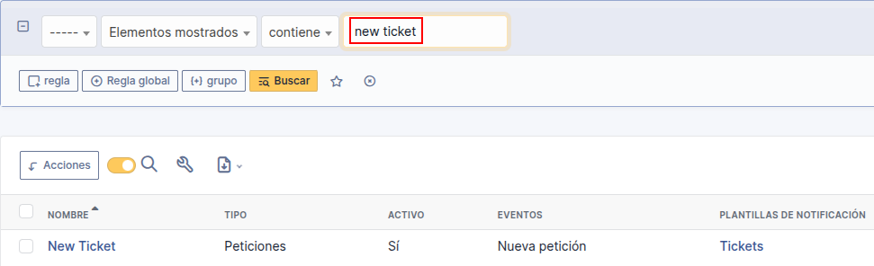
- Editamos esa notificación y guardamos.

- En Destinatarios (Recipients) nos aseguramos de que seleccionamos el grupo que nos interesa y actualizamos-guardamos.

6.6.4.4. - Automatizar las notificaciones
-
Iremos a Configuración > Acciones automáticas.
-
Paso 1. Buscaremos la acción mailgate.
-
La editamos y la desactivamos para que no nos recupere cada vez que se genere una notificación todas los correos almacenados y creados anteriormente (Guardar).

-
Paso 2. Buscaremos las acciones queuednotification (Correos enviados a cola) y queuednotificationclean (Limpiar cola de notificaciones).
-
Cada acción debe tener:
- Modo de ejecución: CLI
- Estado: Programada
- Frecuencia: el intervalo que desees (por ejemplo, cada 5 minutos, cada hora, etc.), aunque el cron que programaremos en el sistema marcará los intervalos reales de tiempo a ejecutar.


-
Paso 3. Usaremos CRON agregando una entrada en el crontab del sistema.
sudo crontab -e
- Añadiremos esto para que se ejecute cada 2 minutos:
*/2 * * * * /usr/bin/php8.3 /var/www/glpi/front/cron.php &>/dev/null
El front/cron.php, viene incluido con GLPI, es un script PHP oficial que GLPI trae para gestionar las acciones automáticas.
6.6.5 - Generación de códigos QR
Los códigos QR se generan para almacenar y compartir información de manera rápida y accesible.
Su uso es muy amplio y en nuestro proyecto incluirá:
-
Enlace al sitio web: Nos facilitará el acceso a las páginas específicas sin necesidad de escribir la URL.
-
Información de los equipos: Nos proporcionará detalles adicionales de cada equipo.
-
Fichero de Imagen.png: Para guardar en la ficha del equipo inventariado y para adjuntar a fichero de texto para su posterior impresion y etiquetado de este.
En nuestro proyecto añadiremos una extensión a nuestro navegador Google-Chrome desde la Web Store de éste, en nuestro caso será:
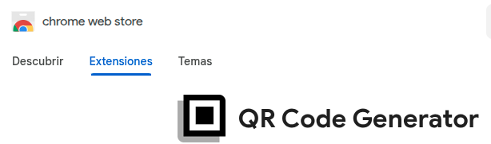 
-
Características principales:
-
Genera códigos QR a partir de texto libre y URLs al instante.
- Genera un código QR para tu página actual con un solo clic.
- Personalización de color y tamaño.
- Opción para descargar el código QR como una imagen (PNG/SVG/Código SVG).
Una vez posicionados en el registro de nuestro dispositivo-equipo, haremos un click en la barra superior del navegador en el icono de nuestra extension.
- Se nos abrirá la imagen de un código QR para poderlo descargar y guardar.

- A continuación se nos abrirá un destino dentro de nuestros directorios para poder elegir una ubicación o una estructura que para tal motivo tengamos creada y guardándolo para después imprimirlo.
6.6.6 - Crear peticiones (incidencias)
Desde la ficha del usuario nos seleccionamos Peticiones creadas >> "Nueva petición para este elemento".

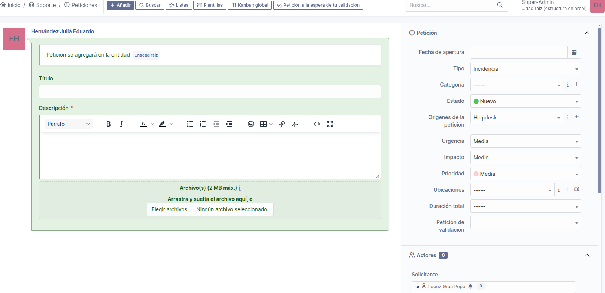
Aquí ya detallaremos el tipo, categoría, estado, urgencia, etc..., que una vez añadida se nos plasmará en el panel central.

6.7 - Instalación automatizada de los puntos 6.3 y 6.4
Para una instalación más rápida y optimizada de todo el proceso realizado en los puntos 6.3 y 6.4 y para configurar automáticamente algunas funcionalidades clave, podemos utilizar un script:
Puedes ver el script aquí
6.8 - Descarga e instalación de Visual Studio Code

Editor de código fuente desarrollado por Microsoft, ligero, rápido y muy personalizable que utilizaremos para ajustar el documento del proyecto, nos ayudará a organizar nuestro contenido documentado, nos dará ideas de como unirlo y nos avisará si algo no encaja bien.
-
Paso 1. Desde la web oficial descargaremos el paquete que corresponda con nuestro SO.
-
Paso 2. Ejecutaremos el instalador "desde el directorio en el cual lo hemos descargado" y seguiremos las instrucciones de éste, lo cual veremos detalladamente en un apartado aparte para este cometido.
6.9 - Instalación de las extensiones en VScode para Markdown

Markdown es un lenguaje de marcado ligero que nos permite dar formato a texto plano de manera sencilla, donde los cambios de formato se ven inmediatamente, Markdown utiliza una sintaxis simple para indicar cómo debe formatearse el texto sin usar botones ni menús. Será el lenguaje que utilizaremos para describir el proyecto que nos proporcionará una forma fácil y rápida de escribir texto con formato (como títulos, negritas, listas o enlaces) usando solo el teclado, sin menús ni botones.
- Paso 1. Buscaremos e instalaremos las extensiones desde la barra lateral izquierda, haciendo clic en el icono de Extensiones.

-
Paso 2. Instalaremos las extensiones esenciales para trabajar con markdown.
-
Markdown All in One:
-
Ofrece funciones como vista previa, atajos de teclado, autocompletado, lista de contenidos, y mucho más.
-
Muy útil para quienes trabajan extensamente con documentos Markdown.
-
Markdown Preview Enhanced:
-
Esta extensión amplía la vista previa estándar de Markdown de VS Code.
-
Permite previsualizar diagramas, fórmulas matemáticas, archivos PDF, y otros elementos avanzados.
-
Es ideal para documentos Markdown complejos.

6.10 - Instalación de Tex Live
Es una distribución de software que incluye todo lo necesario para trabajar con documentos en TeX y LaTeX. Será el compilador para generar nuestro documento PDF del proyecto.
Instalaremos la distribución de la versión completa que contiene todas las herramientas, ya que necesitamos lualatex como motor de procesamiento.
sudo apt update
sudo apt install texlive-full
6.11 - Instalación de Pandoc

Es una herramienta de software libre y de código abierto que se utiliza para convertir documentos de un formato a otro. Se le conoce como el "convertidor universal de documentos" debido a su amplia capacidad para manejar una gran variedad de formatos de entrada y salida y por tanto será el conversor que utilizaré para trasformar el documento del proyecto de Markdown a PDF.
Es el conversor principal que transforma Markdown en PDF.
sudo apt install pandoc -y
6.12 - Instalación de la plantilla Eisvogel

Herramienta que mejora la presentación de documentos convertidos desde markdown a pdf, por tanto será la plantilla que nos facilitará la mejora de calidad en la creación del documento final de nuestro proyecto.
-
Paso 1. Descargaremos la última versión de la plantilla desde web "SOURCEFORGE".
https://sourceforge.net/projects/eisvogel.mirror/
wget https://sourceforge.net/projects/eisvogel.mirror/files/latest/download -
Paso 2. Descomprimimos la carpeta.
Posteriormente eliminaremos el fichero .zip, que no lo necesitaremos.
sudo unzip Eisvogel-<version>.zip sudo rm -rf Eisvogel-<version>.zip -
Paso 3. Copiamos el fichero "eisvogel.latex" dentro del directorio donde se encuentre nuestro documento .md.
sudo cp Eisvogel-<version>/eisvogel.latex /ruta al directorio del fichero .md -
Paso 4. El comando para convertir-compilar el archivo.md en un archivo.pdf bonito usando Pandoc y LaTex.
pandoc archivo.md -o archivo.pdf \ --from markdown \ --template eisvogel.latex \ --pdf-engine=lualatex \ --listings \ --toc \ --toc-depth=5 -
from markdown: el archivo está en formato Markdown.
-
template eisvogel.latex: usa la plantilla llamada eisvogel para que quede bonito.
- pdf-engine=lualatex: usa el motor LaTeX llamado lualatex para generar el PDF.
- listings: mejora cómo se ve el código (usa el paquete listings de LaTeX).
- toc: añade una tabla de contenido (índice).
- toc-depth=5: el índice puede mostrar hasta 5 niveles de títulos.
6.13 - Proceso automatizado de conversión de markdown a PFD
Para configurar automáticamente el proceso de conversión de .md a PDF de una manera más rápida, podemos utilizar el script:
Puedes ver el script aquí
6.14 - Instalación de MkDocs

Es un generador rápido de páginas web estáticas orientado a la creación de documentación de proyectos. Será nuestro sitio HTML en donde se alojará nuestra documentación del proyecto. Combina simplicidad con flexibilidad, permitiéndonos personalizar el diseño con temas y complementos.
-
Paso 1. Instalamos Python.
MkDocs está hecho en Python, así es que lo necesitamos.
sudo apt update sudo apt install python3 python3-pip -
Paso 2. Instalamos MkDocs con pip.
sudo pip3 install mkdocs -
Paso 3. Instalar "material".
sudo pip3 install mkdocs-material -
Paso 4. Creamos un proyecto en Mkdocs.
mkdocs new mi-documentacion cd mi-documentacion -
Esto nos crea una estructura como esta:

-
Paso 5. Añadimos el contenido de .md propio, ejemplo: (docs/Proyecto.md).
# Proyecto - Paso 1 - Paso 2 -
Paso 6. Luego en nuestro "mkdocs.yml" añadiremos.
site-name: Mi documentación theme: name: material nav: - Inicio: index.md - Tutorial: Proyecto.md -
Paso 7 . Si queremos ver el sitio localmente.
mkdocs serve
Abriremos nuestro navegador en http://127.0.0.1:8000
-
Paso 8. Publicar con GitHub Pages (después de haberlo subido a GitHub)
mkdocs gh-deploy
Esto nos generará una carpeta site/ la cual sube al repositorio en una rama especial llamada gh-pages

6.14 - Instalación de Git

Es una plataforma en línea diseñada para el desarrollo y la colaboración de software. Es el lugar donde desarrolladores y equipos pueden almacenar, compartir y trabajar juntos en proyectos. En nuestro caso será la plataforma que alojará nuestro documento del proyecto, para una posterior visualización.
-
Paso 1. Instalamos Git.
sudo apt update sudo apt install git -
Paso 2. Configuraremos Git por primera vez (nuestro nombre y correo).
git config --global user.name "Edu Yo" git config --global user.email "edu@edu.com" -
Paso 3. Crearemos una cuenta de GitHub (si no la tenemos).
-
Vamos a : https://github.com/ y creamos ua cuenta.

-
Paso 4. Creamos un repositorio en GitHub desde la web.

-
Paso 5. Generamos un nuevo token.
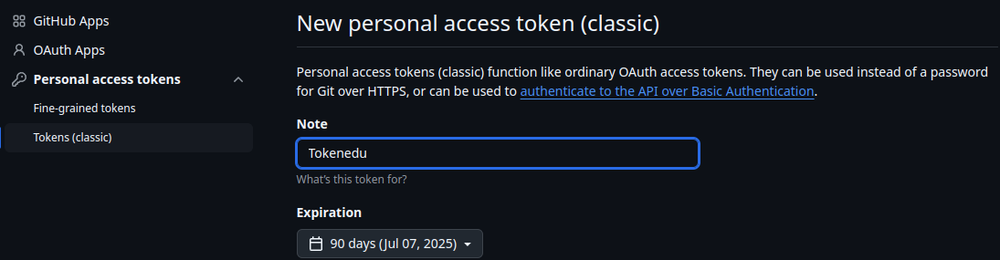
-
Paso 6. Clonamos el repositorio desde el terminal.

git clone https://github.com/eduherjul/proyecto-GLPI.git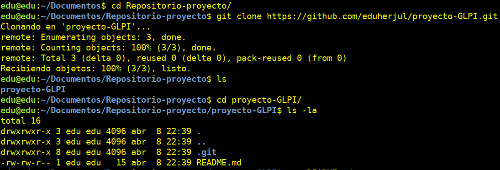
Cada vez que subamos cambios, nos pedirá usuario y contraseña (o token si usamos 2FA).
7 - Impresión de códigos QR
Componente es el que utilizaremos para crear una tabla de 5x5 que nos permitirá ubicar 25 códigos QR generados con nuestra extensión de Google para poder etiquetar e identificar nuestro inventario.
Almacenados en nuestros directorios, iremos seleccionando uno a uno y arrastrándolos a una hoja de texto .odt o .docx para ponerlos en una tabla para su impresión (PDF) en tamaño A4.
Incluiremos en la parte inferior del código QR el nombre del dispositivo.

8 - Migración de la aplicación GLPI desde AWS a Proxmox
8.1 - Detalle del proceso
Paso 1 - Hacer backup y comprimir la BBDD de GLPI (MariaDB) al $HOME.
mysqldump -u root -p glpi > $HOME/glpi_backup.sql
gzip $HOME/glpi_backup.sql
Paso 2 - Comprimir los archivos de GLPI.
sudo tar -czvf $HOME/glpi_files.tar.gz /var/www/glpi
Paso 3 - Copiar los archivos desde el $HOME de AWS al directorio (Ejem:$HOME) donde se encuentra la clave_AWS.pem del HOST.
Esta operación la haremos desde el HOST.
scp -i $HOME/clave_WS.pem ubuntu@ec2-3-86-189-107.compute-1.amazonaws.com:/home/ubuntu/glpi_backup.sql.gz ./
scp -i $HOME/clave_AWS.pem ubuntu@ec2-3-86-189-107.compute-1.amazonaws.com:/$HOME/glpi_files.tar.gz ./
Paso 4 - Ejecutamos todo el contenido e instalación de los puntos 6.2 y 6.3 que detallamos anteriormente.
- Creando una instalación de Proxmox y un Ubuntu Server con una pila LAMP sin GLPI dentro de éste.
Paso 5 - Copiamos los archivos desde el $HOME del HOST al $HOME de Ubuntu Server.
sudo scp glpi_backup.sql glpi_files.tar.gz $USER@IP_ubuntu_SRV:./
Tendremos en cuenta al crear el usuario para la BBDD que sea el mismo usuario que el de la BBDD que exportamos.
Paso 6 - Descomprimimos y restauramos la BBDD
gunzip -f "$HOME"/glpi_backup.sql.gz
mysql -u <user> -p<passwd> glpi < "$HOME"/glpi_backup.sql
Paso 7 - Descomprimimos los archivos de GLPI.
Como el archivo descomprimido ya incluye la estructura /var/www/, usamos, --strip-components=2 que elimina los 2 primeros niveles de directorio (var/ y www/) al descomprimir.
sudo tar --strip-components=2 -xzvf "$HOME"/glpi_files.tar.gz -C /var/www/
sudo rm -rf "$HOME"/glpi_files.tar.gz
sudo rm -rf /var/www/html/index.html
Paso 8 - Damos los permisos correspondientes.
sudo chown -R www-data:www-data /var/www/glpi
sudo chmod -R 755 /var/www/glpi
8.2 - Proceso automatizado del punto 6.3
Para configurar automáticamente el punto 6.3 de una manera más rápida, podemos utilizar el script:
Puedes ver el script aquí
Abrimos el navegador con la "IP del Servidor" para acceder a la interfaz de GLPI
9 - Script backup en local
Provisionalmente haremos los backups en local, aunque en un futuro dejaremos preparado el script para que haga los backups en local y remoto.
-
Definimos las variables que vamos a necesitar.
usuariodb="edu" passdb="123" backupDir="/home/yo/glpi_backups" fecha=$(date +'%Y-%m-%d_%H-%M-%S') -
Creamos la carpeta de backup si no existe (-p evita errores si ya está creada.)
mkdir -p "$backupDir" -
Hacemos un backup de la BBDD.
DB_BACKUP="$backupDir/glpi_db_$fecha.sql" mysqldump --user="$usuariodb" --password="$passdb" glpi > "$DB_BACKUP" gzip "$DB_BACKUP" DB_BACKUP="$DB_BACKUP.gz" # Actualizamos nombre tras comprimir -
Hacemos un backup de los archivos de GLPI.
GLPI_BACKUP="$backupDir/glpi_files_$fecha.tar.gz" sudo tar -czvf "$GLPI_BACKUP" /var/www/glpi -
Eliminamos backups antiguos (más de 15 días).
find "$backupDir" -type f -mtime +15 -delete -
Damos permisos de ejecución al script.
sudo chmod +x glpi_backupdual.sh -
Usamos en el script "logger" para enviar un mensaje al syslog confirmando la correcta ejecución.
echo "Mensaje" | logger -t "mi_script"proyecto_final.md -
Luego cuando se termine de ejecutar el script revisamos con:
journalctl -t "mi_script" -
Ejecutamos:
sudo crontab -e -
Añadimos la línea del cron para que ejecute automáticamente todos los domingos a las 4:00 de la mañana:
0 4 * * 0 /home/yo/glpi_backupdual.sh
Para configurar automáticamente este proceso de BACKUP de una manera más rápida, podemos utilizar el script:
Puedes ver el script aquí
10 - Script para restaurar en local
- Preguntamos que ficheros queremos restaurar (BBDD-GLPI-AMBOS).
- Vaciamos la BBDD y la restauramos.
- Restauramos los ficheros de GLPI.
Para configurar automáticamente este proceso de RESTAURACIÓN de una manera más rápida, podemos utilizar el script.
Puedes ver el script aquí
11 - Problemas y soluciones
Problema 1:
- La instalación manual de todo el entorno de GLPI me daba errores humanos muchas veces.
Causa:
- Olvidar un paso, escribir mal un comando, falta de una extensión o dependencia, etc..., trae problemas en la instalación.
Solución:
- Lo fusioné todo en un script que me ofrece una forma mucho más rápida y eficiente para realizar la instalación en comparación con el proceso manual.
Problema 2:
- Al instalar PHP8.4 en su última versión no funcionaba la aplicación GLPI.
Causa:
- La documentación oficial de GLPI restringe un rango de versiones (7.4-8.3) de PHP para la última versión de GLPI.
Solución:
- Hice constar en la descarga de PHP una versión dentro de este rango, en mi caso (8.3).
Problema 3:
- Durante la configuración de GLPI, la pestaña de selección de zonas horarias no se desplegaba correctamente, mostrando una lista vacía al intentar asignar husos horarios.
Causa:
- Permisos insuficientes.
- La BBDD no tenía cargadas las definiciones de zonas horarias.
- Existían formatos de fecha/hora incompatibles en la BBDD de GLPI.
Solución:
- Cargue datos de zonas horarias en MariaDB.
- Otorgué permisos al usuario de GLPI.
- Actualicé campos obsoletos en la BBDD.
Problema 4:
- Durante la configuración del servidor de correo en GLPI, el uso de Postfix presentó múltiples complicaciones (fallos en el envío, configuración compleja de DNS, problemas de relay, etc.).
Causa:
- Complejidad de Postfix, posibles conflictos con firewalls y errores de autenticación o permisos en el relay.
Solución:
- Gmail como alternativa usando smtp.gmail.com (puerto 587 con TLS), credenciales con contraseña de aplicación y protección anti-spam integrada, con lo que tener una alta disponibilidad y robustez evitando caídas o problemas de entrega de correo.
Problema 5:
- Al implementar notificaciones automáticas en GLPI, el sistema estaba recuperando y reenviando todos los correos antiguos cada vez que se generaba una nueva notificación.
Causa:
- La acción automática mailgate está configurada para procesar todos los correos almacenados en la cola de notificaciones, incluyendo los históricos, en lugar de limitarse a los nuevos.
Solución:
- Desactivé el reprocesamiento automático de correos antiguos.
Problema 6:
- Las notificaciones por correo en GLPI no se enviaban inmediatamente, sino que se acumulaban en la cola.
Causa:
- Por defecto, GLPI no ejecuta automáticamente el procesamiento y limpieza de la cola de notificaciones, requiriendo una configuración manual y su integración con el programador de tareas (cron) del sistema.
Solución:
- Configuré las acciones Automáticas en GLP.
- Active el modo de ejecución CLI (para permitir su ejecución desde el cron).
- Programé el front/cron.php, que viene incluido con GLPI, que es un script PHP oficial que GLPI trae para gestionar las acciones automáticas y periódicamente.
Problema 7:
- Al intentar configurar el plugin de BorgBase para realizar backups de GLPI directamente a un repositorio remoto de BorgBase, me encontré después de configurar los parámetros requeridos, la incapacidad del plugin para comunicarse correctamente con la API de BorgBase. Por tanto me impidió la configuración de backups automatizados y gestionados a través de la interfaz de GLPI utilizando BorgBase.
Causa:
- Configuración incorrecta del plugin.
Solución:
- Debido a estas dificultades para establecer una conexión confiable y funcional con el repositorio de BorgBase a través del plugin, implementé un script que gestiona tanto el backup de la BBDD como los ficheros, programando la ejecución mediante cron y al ejecutarse con sudo nos permite tener los permisos necesarios para acceder a todos los ficheros de GLPI